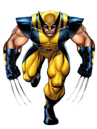

Flash
Flash é um nome compartilhado por diversos super-heróis da DC Comics. Criado pelo escritor Gardner Fox e pelo artista Harry Lampert, o Flash original estreou em Flash Comics #1 (1940). Uma vez apelidado velocista escarlate, o Flash possui "super-velocidade", consegue mover-se a uma velocidade sobre-humana ou seja incluia a habilidade de correr e mover-se extremamente rápido, usar reflexos sobre-humanos e violar certas Leis da física, podendo até mesmo ultrapassar a velocidade da luz. Até então, quatro diferentes personagens, cada qual de algum modo ganhou o poder da super-velocidade, assumiram a identidade de Flash: Jay Garrick (1940-1956), Barry Allen (1956-1986, 2008-), Wally West (1986-2006, 2007-) Bart Allen (2006-2007). A segunda versão do Flash é geralmente considerada o primeiro herói da Era de Prata dos Quadrinhos e o super-herói permaneceu um dos mais populares desde então. Cada versão do Flash foi um membro chave ou da Sociedade da Justiça da América ou da Liga da Justiça, principais grupos da DC. Uma versão de Barry Allen foi vista em um seriado de tv, estrelado por John Wesley Shipp. Uma versão Wally West foi utilizada na série animada Liga da Justiça.
Wolverine

Wolverine é um personagem fictício que aparece nas histórias em quadrinhos publicadas e nos filmes da Marvel Comics. A primeira aparição do personagem foi na HQ Incredible Hulk #180 (outubro de 1974) e foi criado pelo escritor Len Wein e pelo diretor de arte John Romita, que desenvolveu o personagem. Foi desenhado pela primeira vez para publicação por Herb Trimpe.
Nascido James Howlett e comumente conhecido como Logan, Wolverine é um mutante que possui sentidos sobre-humanos, atributos físicos melhorados e uma poderosa capacidade regenerativa, conhecida como fator de cura. Ele foi descrito várias vezes como um membro dos X-Men, Tropa Alfa, e dos Vingadores.
A primeira aparição de Wolverine foi na revista The Incredible Hulk #180, em Outubro de 1974, em história escrita por Len Wein e desenhada por Herb Trimpe. A partir daí, o personagem fez aparições em várias publicações da Marvel Comics, até fazer sua maior participação em The Incredible Hulk #181, em Novembro de 1974 novamente em história de Wein e Trimpe. John Romita desenhou o personagem em uniforme amarelo e azul e foi apresentado apenas como sendo um agente super-humano do governo canadense. Nessas aparições, suas garras não eram mostradas retráteis, embora Len Wein já tenha dito que elas sempre foram desenhadas com essa idéia.
Hulk

O Hulk, por vezes referido como O Incrível Hulk (The Incredible Hulk, no original em inglês) é um personagem de quadrinhos/banda desenhada do gênero super-herói, propriedade da Marvel Comics, editora pela qual as histórias do personagem são publicados desde sua criação, nos anos 1960. Concebido pelo roteirista Stan Lee (1922-) e pelo desenhista Jack Kirby (1917-1994), teve sua primeira aparição junto ao público original dos Estados Unidos na revista The Incredible Hulk n°1, lançada no mercado americano pela Marvel Comics em maio de 1962, um título solo do personagem, garantindo-lhe o acesso ao que mais tarde seria popularmente conhecido como Universo Marvel dos quadrinhos/banda desenhada. A partir de então, o Hulk tem aparecido, protagonizando ou não, diversas histórias da editora, se tornando um dos mais visualmente reconhecíveis da mesma, tendo o universo entorno do personagem se expandido continuadamente ao longo das últimas décadas.
Apesar de fugir de diversos padrões pré-estabelecidos para super-heróis enquanto personagem da cultura pop mundial, Hulk é considerado um super-herói, mais pelas características sobre-humanas por ele apresentadas do que por conceitos bases de inserção no gênero.
Na história original dos quadrinhos, o Hulk é um selvagem e poderoso alter ego do Dr. Robert Bruce Banner, um cientista que foi atingido por raios gama enquanto salvava um adolescente durante o teste militar de uma bomba por ele desenvolvida. Este adolescente, Rick Jones, tornou-se companheiro de Banner, ajudando-o a manter o Hulk sob controle e mantê-lo longe dos ataques dos militares, que viam a criatura como uma ameaça.
Ao invés de padecer pela radiação, o cientista foi condenado a uma vida compartilhada com o seu lado mais obscuro, o também chamado golias verde. Originalmente, a cor do personagem era cinza, mas, por problemas na hora da impressão dos quadrinhos (a gráfica não conseguia acertar a tonalidade), ele apareceu num tom esverdeado, fazendo com que o Hulk passasse a ser o "Gigante Esmeralda" que conhecemos desde o início.
Outro fato interessante é que, nas primeiras histórias, a transformação de Banner em Hulk ocorria apenas à noite, como se isso fosse alguma maldição similar à dos lobisomens. Porém, em pouco tempo, Kirby e Lee chegaram a um acordo e o Hulk passou a surgir toda vez que o Dr. Banner ficava irritado e despertava em si seu lado mais selvagem.